Mi-HEALTHplus
WHAT TO KNOW ABOUT UTIs/STDs AND EFFECTIVE CURE


WHAT TO KNOW ABOUT UTIs/STDs AND EFFECTIVE CURE
A urinary tract infection is a very common type of infection in your urinary system. It can involve any part of your urinary system. Bacteria — especially E. coli — are the most common cause of UTIs. Symptoms include needing to pee often, pain while peeing and pain in your side or lower back. Antibiotics can treat most UTIs.
This type of infection can involve your:
Urethra (urethritis).
Kidneys (pyelonephritis).
Bladder (cystitis).
Urine (pee) is a byproduct of your blood-filtering system, which your kidneys perform. Your kidneys create pee when they remove waste products and excess water from your blood. Pee usually moves through your urinary system without any contamination. However, bacteria can get into your urinary system, which can cause UTIs
Also, Sexually transmitted infections can lead to sexually transmitted diseases. Treatment can depend on your diagnosis
DIFFERENT TYPES OF URINARY TRACT INFECTIONS

There are three different types of urinary tract infections. The type of infection depends on which part of the urinary tract is infected
A urinary tract infection may involve different sections of the urinary tract including the following:
Urethritis: An infection of the urethra, the hollow tube that drains urine from the bladder to the outside of the body.
Cystitis A bacterial infection in the bladder that often has moved up from the urethra.
Pyelonephritis An infection of the kidneys that is usually a result of an infection that has spread up the tract, or from an obstruction in the urinary tract. An obstruction in the urinary tract causes urine to back flow into the ureters and kidneys.
UTI vs. STI: Which One Is It?

UTIs and STIs both cause painful urination, but their other symptoms differ
Sexually transmitted infections (STIs) are primarily spread through sexual contact, while urinary tract infections (UTIs) are usually contracted from bacteria passed on through the urinary tract. Both types of infections can have similar symptoms, but treatments and complications for a UTI vs. STI might differs.
What is a UTI?
Urinary tract infectionshappen when bacteria enter the urethra, the tube that carries urine from the bladder to the vulva or penis. UTIs can happen to anyone, including children, and they are not STIs. However, having sex increases your risk for UTIs, particularly for people with vaginas.
UTIs can affect the bladder or the kidneys. UTIs that affect the kidneys are typically more serious than those affecting the bladder.
Symptoms of a UTI
The symptoms of a UTI are the same regardless of sex. They include:
- Pain or burning during urination
- More frequent urination
- Foul-smelling urine
- Feeling the urge to urinate even when your bladder is empty
- Bloody urine
- Pressure and cramping in the groin or abdomen
Sometimes, a UTI can travel from the bladder to the kidneys. If you develop a kidney infection, you may experience:
- Fever and chills
- Nausea and vomiting
- Pain in the lower back and sides
What Are Risk Factors of UTIs?
Some people are at higher risk of getting a UTI. UTIs are more common in females because their urethras are shorter and closer to the rectum. This makes it easier for bacteria to enter the urinary tract. Other factors that can increase the risk of UTIs:
- A Previous UTI
- Sexual activity
- Changes in the bacteria that live inside the vagina, or vaginal flora. For example, menopause or the use of spermicides can cause these bacterial changes.
- Pregnancy
- Age (older adults and young children are more likely to get UTIs)
- Structural problems in the urinary tract, such as enlarged prostate
- Poor hygiene, for example, in children who are potty-training
What is an STI?
STIs are infections that are passed from one person to another during sexual contact, including oral, vaginal, and anal sex. Some STIs can also be passed through close touching and skin-to-skin contact. Viruses, bacteria, or parasites can cause STIs.
The most common STIs include:
- Human papillomavirus (HPV)
- Herpes simplex virus
- Trichomoniasis
- Chlamydia
- Gonnorhea
- HIV
Symptoms of an STI
Frequent or painful urination is a common symptom of STIs. However, other STI symptoms can differ depending on anatomy. It’s also common to have an STI that has no symptoms at all.
The common symptoms of STIs in people with a penis are:
- Burning or itching on or around the penis
- Dripping or discharge from the penis
- Sores, bumps, and blisters on the penis, anus, or mouth
- Pelvis pain
- Pain during bowel movements
The common symptoms of STIs in people with a vagina are:
- Burning or pain when urinating
- Urinating more often
- Pain or itchiness in the vagina
- Abnormal discharge, bleeding, or odor from the vagina
- Pain during sex
- Sores, bumps, or blisters around the vulva, vagina, anus, or mouth
- Pelvic pain
5 Common Myth About STDs
Myth #1: STDs Go Away on Their Own
Many People mistakenly believe STDs aren't serious and will go away in time. In reality, untreated STDs can cause serious and even permanent damage to your reproductive organs. This leads to issues with infertility and other long-term reproductive health complications.
Myth #2: You Only Need STD Teasting If You Have A lot of Sex
The truth is , It only takes one encouter with an infected person for you to become sick. Anyone you have sex with afterwards can also become infected and continue spreading the disease to others. Even if you use a condom, you should be tested regularly for STDs if you're sexually active.
Myth #3: You Can Tell Who Has An STD:
Herpes and other conditions can cause visible warts on genitals, but those signs aren't always present. Without testing, there is no other way you can tell who has an Infection. Before you start sexual relations with someone new, both of you should be tested. you should also get regular STD testing for as long as you're sexually active.
Myth #4: You Can't Get Infected If You Birth Control:
Condoms are the only form of birth control that can reduce your risk for getting an STD. You can still become infected if you have sex with an infected person regardless of what kind of birth control you take if yo have unprotected sex.
Myth #5: You Can Only Get An STD Once:
This particular myth can be especially dangerous. You can get many STDs multiple times and will require treatment for each occasion. Some viral infections, including herpes and HIV, remain in your body and cause recurrent health complications.
6 Common Myth About UTIs
Myth #1: Only Women can get Urinary Tract Infections:
Truth: UTIs can affect both men and women. Women are at greater risk for a UTI because the urethra is shorter thatn in men, so it's easier for bacteria to travel to the bladder. UTIs also are more common in postmenopausal women because low estrogen levels change vaginal and urethral tissue to increase the risk of infection.
Myth #2: All UTIs Cause Symptoms:
Truth: Most UTIs cause symptoms, like pain ro burning when urinating; feeling like yo need to urinate often; or a burning sensation while urinating. However, it is possible to ahve bacteria in the urinary tract but not have any UTI symptoms. This is called asymptomatic bacteriuria, and it is more common in older adults or people who use a catheter to empty their bladders.
Myth #3: All UTIs Must Be Treated With Antibiotics:
Truth: Not all UTIs require antibiotics. Some people can have bacteria in their bladders but not experience any symptoms. This is called asymptomatic bacteriuria. In most cases, no treatment is necessary as the bacteria is not causing issues. But there are a few groups of people that may require treatment, including people who are pregnant, people with planned urologic surgery and people with weakened immune systems.
Myth #4: A UTIs Will Go Away On Its Own:
Facts: Asymptomatic bacteriuria, which is a UTI without symptoms, could go away without treatment. However, UTIs with symptoms rarely resolve on thier own. If you are experiencing UTI symptoms, like burning, pain or frequency, talk with your health care team about obtaining a urine culture and the right treatment for you.
Myth #5: UTIs Can be Passed To Your Partner:
Truth: UTIs are not contagious or passed between partners by sexual or casual physical contact.
Myth #6: UTIs Are Sexually Transmitted Infections:
Facts: Sexual activity can increase the risk for, but it does not casue a UTI. Therfore, UTIs are nto classified as sexually transmitted infections. The act of intercourse can cause bacteria to get close to or into the urethre, the small tube that empties your bladder. Lower your risk by urinating after intercourse to remove some of the bacteria before it can cause an infection.
How Can UTIs be Prevented?
You can help prevent UTIs by doing the following:
- Urinate after sexual activity.
- Stay well hydrated.
- Take Showers instead of baths.
- Minimize douching, sprays, or powders in the genital area.
- Teach girls when potty training to wipe front to back.
STAPH WITH WHAT YOU NEED TO KNOW!!!
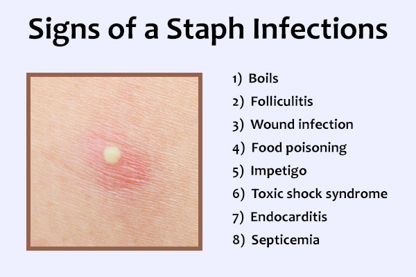
Staph infections are caused by staphylococcus bacteria. These types of germs are commonly found on the skin or in the nose of many healthy people. Most of the time, these bacteria cause no problems or cause relatively minor skin infections.
But Staph infections can turn deadly if the bacteria invade deeper into your body, entering your bloodstream, joints, bones, lungs or heart. A growing number of otherwise healthy people are developing life-threatening staph infections.
Treatment usually involves antibiotics and cleaning of infected area. However, some staph infections no longer respond, or become resistant to common antibiotics.
Research conducted by Centers for Disease Control and Prevention (CDC) in October 7, 2019 reveals that staphylococcus and Other Stubborn infections can immediately end someone's life in a second.
Here are some notable symptoms of staph
Staph infections can range from minor skin problems to endocarditis, a life-threatening infection of the inner lining of your heart (endocardium). Because of this, signs and symptoms of staph infections vary widely, depending on the location and severity of the infection.
Skin Infections
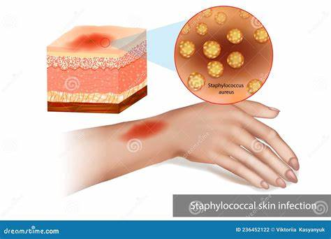
Skin Infections caused by staph bacteria include:
Boil: The most common type of staph infection is the boil, a pocket of pus that develops in a hair follicle or oil gland. The skin over the infected area usually becomes red and swollen. If a boil breaks open, it will probably drain pus. Boils occur most often under the arms or around the groin or buttocks.
Impetigo: This contagious, often painful rash can be caused by staph bacteria. Impetigo usually features large blisters that may ooze fluid and develop a honey-colored crust.
Cellulitis: Cellulitis - an infection of the deeper layers of skin - causes skin redness and swelling on the surface of your skin. Sores or areas of oozing discharge may develop, too.
Staphylococcal scalded skin syndrome: Toxins produced as a results of a staph infection may lead to staphylococcal scalded skin sndrome. Affecting mostly babies and children, this condition features a fever, a rash and sometimes blisters. When the blisters break, the top layer of skin comes off - leaving a red, raw surface that looks like a burn.
Food Poisoning
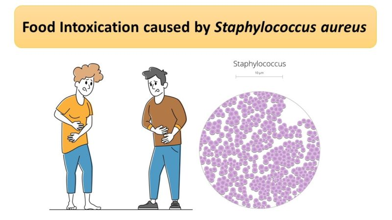
Staph bacteria are one of the most common causes of food poisoning. Symptoms come on quickly, usually within hours of eating a contaminated food. symptoms usually disappear quickly, too, often lasting just half a day.
A Staph infection in food usually doesn't cause a fever. Signs and symptoms you can expect with this type of staph infection include:
- Nausea and vomiting
- Diarrhea
- Dehydration
- Low blood Pressure
Bacteremia
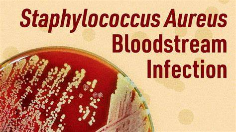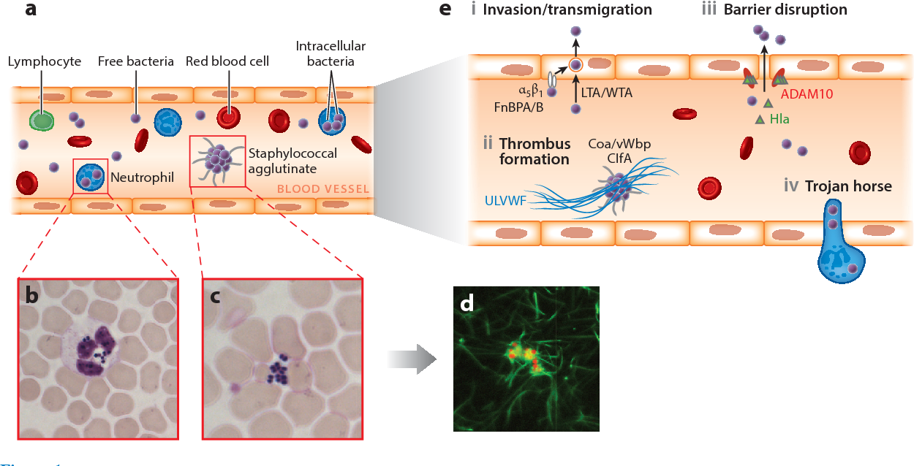
Also known as a bloodstream infection, bacteremia occurs when staph bacteria enter a person's bloodstream. A fever and low blood pressure are signs of bacteremia. the bacteria can travel to locations deep within your body, to produce infections affecting:
- Internal Organs, such as your brains, heart or lungs Bones and musles.
- Surgucally implanted devices, such as artificial joints or cardiac pacemakers
Toxic Shock Syndrome
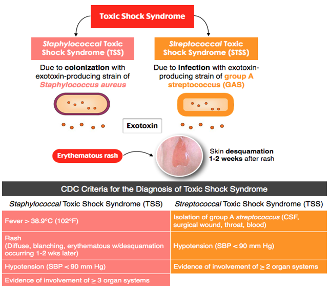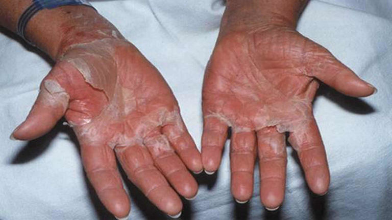
This life-threatening condition results from toxins produced by some strians of staph bacteria and has been linked to certian types of tampons, skin wounds and surgery. It usually develops suddenly with:
- A High Fever
- Nausea and vomiting
- A rash on your palms and soles that resembles a sunburn
- Confusion
- Muscle aches
- Diarrhea
- Stomach pain
Septic Arthritis
Septic arthritis is often caused by staph infection. the bacteria often target the knees, shoulders, hips, and fingers or toes. Signs and symptoms may include:
- Joint Swelling
- Severe pain in the affected joint
- Fever
OTHER INFECTION, SYMPTOMS AND HOW LONG IT TAKE BEFORE THE SYMPTOMS APPEAR
Chlamdyia
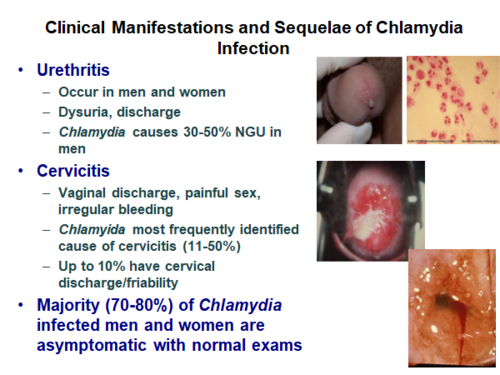Chlamydia is a common sexually transmitted infection that can occur in both men and women. It is caused by a bacterium called Chlamydia trachomatis. It is easily treated and cured with antibiotics. If not treated, Chlamydia can cause serious problems, including infertility and ectopic pregnancy. In pregnant women, it can cause the baby to be born early (permaturity)
Chlamydia is bacterial infection of your genital tract. Chlamydia may be difficult to detect because early-stage infections often cause few or no signs and symptoms. When they do occur, symptoms usually start one to three weeks after you've been exposed to chlamydia and may be mild and pass quickly.
Signs and symptoms may include:
- Painful Urination
- Lower abdominal pain
- Vaginal discharge in women
- Discharge form the penis in men
- Pain during sexual intercourse in women
- Bleeding between periods in women
- Testicular pain in men
Gonorrhea
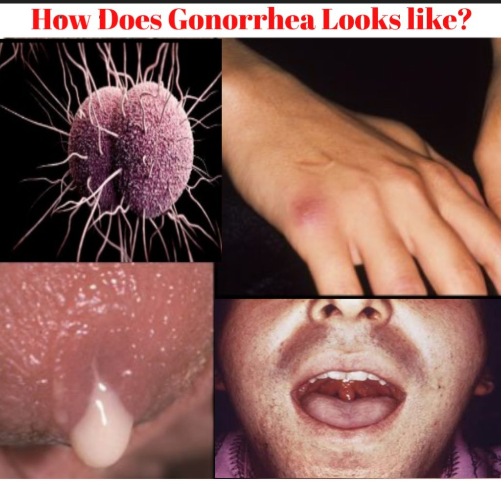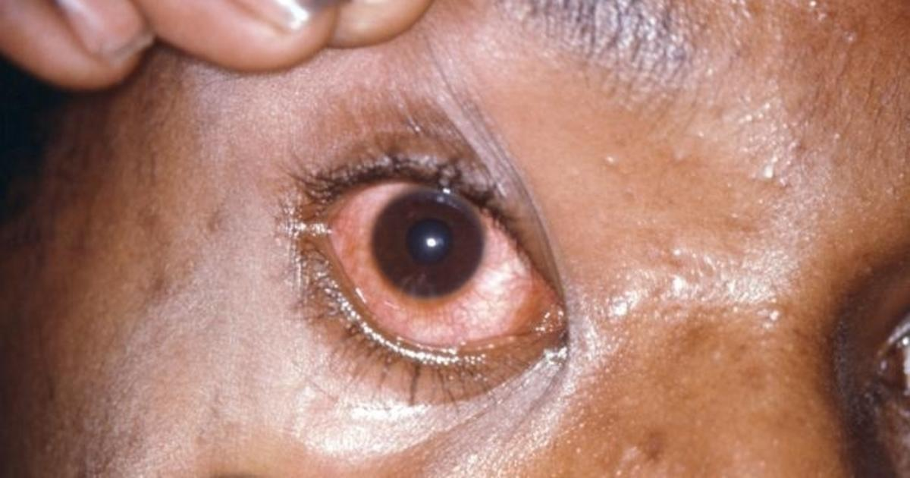Gonorrhea is a common bacterial STD infection caused by Pheumococcal Organisms has similar long-term effects like Chlamydia. It is a bacterial infection of the genital tract.
Signs and symptoms of Gonnorhea may include:
- Thick, cloudy or bloody discharge from the penis or vagina
- Pain or burning sensation when urinating
- Heavy menstrual bleeding or bleeding between periods
- Painful, Swollen testicles
- Painful bowel movements
- Anal itching
Trichomoniasis
Trichomoniasis is a common STI caused by a microscopic, one-called parasite called Trichomonas vaginalis. this organism spreads during sexual intercourse with someone who already has the infection.
The organism usually infects the urinary tract in men, bt often causes no symptoms. Trichomoniasis typically infects the vagina in women. When trichomoniasis causes symptoms, they may appear within five to 28 days of exposure and range from mild irritation to severe inflammation.
Signs and symptoms of Trichomoniasis may include:
- Clear, white, greenish or yellowish vaginal discharge
- Discharge form the penis
- Strong vaginal odor
- Vaginal itching or irritation
- Pain during sexual intercourse
- Painful urination
Syphilis
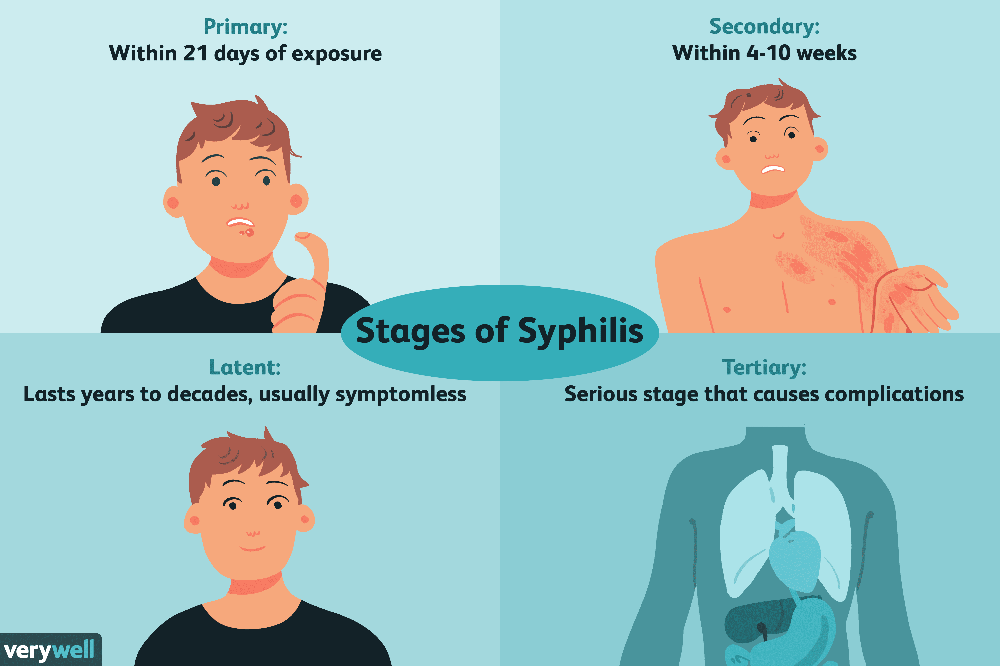Syphilis is a sexually transmitted disease with a notorious history. Caused by the bacterium Trepidation pallidum, it can lead to serious complications if left untreated. Syphilis is transmitted by direct contact with syphilis sores, which can appear on the external genitals and the mouth, as well as in the vagina or rectum. Because these sores can appear on areas not covered by condom, condoms only reduce the likelihood of transmission, but not eliminate it entirely. The small painless sores (Chancres) of early syphilis may heal by themselves, but that doesn't mean the disease is gone - it just become more difficult to detect and
The disease affects your gnitals, skin and mucous membranes, but it can also involve many other parts of your body, including your brain and your heart.
The signs and symptoms of syphilis may occur in three stages - Primaty, Ceconday, and tertiart. Some people also experience latent syphilis, in which blood tests are positive for the bacteria but no symptoms are present.
At first, only a small, painless sore (chancre) may be present at the site of infection, usually the genitals, rectum, tongue or lips.
As the disease worsens, symptoms may include:
- Rash marked by red or reddish-brown, penny-sized sores over any area of your body, including your palms and soles
- Fever
- Enlarged lymph nodes
- Fatigue and a vague feeling of discomfort
- Soreness and aching.
Without treatment, syphilis bacteria may spread, leading to serious internal organ damage and death years after the original infection.
Some of the signs and symptoms of late-stage syphilis include:
- Lack of coordination
- Numbness
- Paralysis
- Blindness
- Dementia
There's also a condition known as Congenital syphilis, which occurs when a pregnant woman with syphilis passes the disease to her unborn infant. Congenital syphilis can be disabling, even life-threatening, so it's important for pregnant women with syphilis to be treated.
Do Staph and other bacteria infection go away?
Reversing Staph and other bacteria infection is quite simple and straightforward using basic biochemical cause and effect. The Only reason people don't beat their Staph is because; they don't know about this information, and big Medicine like Erythromycin, Azithromycin, Doxycycline, Ciproloxacin and many other doesn't teach anybody this information.
Drug companies would much prefer to keep you dependent on drugs. The monment you beat Staph, they lose a customer.
--- Are you not tired of painful intercourse?
--- Are you not tired of abdominal pains?
--- Are you not tired of incessant stomach pains?
--- Are you not tired of discharges and many more?
If you are fed up and tired of struggling with infections, then you need to do something about it. You should not allow the infection to control and dictate your life. You need to take a stand against it and you need to start doing that today. Why are infections so common? Is it because people don't know how to treat, prevent, and avoid them?
It's time to stop poisoning yourself!, It's time to kick STAPH and other severe UTIs' out of your life!, Don't quit and don't be tired. RESIST, the solution is here!!
...Everyone has their stories, Mine Might be similar to yours. Others can be different from mine but what i surely know of is that, we have lots of things in common and this story of mine is just to let you know that there's still something that works effectively out there, My story might inspire you,
Just read on!!!
... My Story transcended from sad to good; and from good to better even after using an expensive antibiotics which proved abortive. There is nothing, I meant nothing i haven't tried to combat this deadly infection... Indeed, there is nothing God can not do. Also, there's always a hope at the end of the tunnel.
I am Stella Okafor from Anambra State, a mother of 3 wonderful kids and a teacher by profession. Year 2020 was a year I won't want to experience again for the rest of my life. My husband, Chris and I haven't experienced anything of such since we ever got married. It drained us - Emotionally, Physically, Spiritually and Financially. Apart from draining us, It taught us lots of lessons, I meant life lessons especially how human treats human all in the name of trying to provide solutions ot a prevailing problem... Anyway, that isn't the reason why I am telling you this. For more than a week, I had severe itching in my private part, irregular menstruation, and brown discharge.
MY husband had his own share of this too. He got a white milky discharge form the tip of his manhood in the morning, something he thought was normal for more than a week. He also experienced pain when urinating, and always had a frequent urge to urinate regularly. In his word 'urinating now becomes something I get worried of, the last drop of urine makes me uncomfortable for more than 30 minutes'. It came as a sudden shock to us becuase we could not figure out what went wrong or what would have gone wrong. So, I quickly went to a big pharmacy to make some inquires and was told to get 500mg of an antibiotic. I and my husband used it in the evening. We had to continure using it for the next 6 - 8 days so we could notice the effect. Sadly, after 6 days of using it, our conditions became worse and one annoying aspect was that the antibiotics left me with a smelly private part. So, we stopped the self medicatio immediately. We rushed down to the hospital to do some test and found our what was actually worng.
After series of test, both of us were diagnosed of Staphylococcus Infection (STAPH). The doctor recommended a highly powered antibiotics for us. We used them as Instructed ... and after the first 3 days the aymptoms reduced, we continued using them straight, until 7 days. After 2 weeks, we did another sets of urethral and vaginal swab test as advised. The test result came out scanty. Just few weeks later on, the symptoms came back very much in our body system! Shy Didn't the Antibiotics work? That was how I started my personal research. The simple truth is, I discovered that infections like staphylococcus, gonorrhea, syphillis, Chlamydia etc. now have resistance to antibiotics. That mean, common highly powered antibiotics will not have much effect on the bacteria and microbes that causes infections.
To make it even worse, when you continue using this antibiotics and you are not getting a positive effect from it, you are putting yourself at an increased risk of getting more infections that resists antibiotic treatment like - MRSA (Methicillin Resistant Staphylococcus Aureus). While on the Adaeze introduced me to a Consultant. I explained how the staph infection have affected my marriage, destroyed our immune system, affected our health and also affecting my fertility. He recommended this 'VANTACIN + CAPSULES' that helped cure the infection.
I was naive and skeptical about this because we had used even more expensive products but nothin seemed to work. The Consultant claimed that the product has even helped for other infections like Syphills, Gonorrhea and others.
While treating the root cause of the problem and banishes it for life from the body system. According to the health expert, the major difference is that this solution is purely herbal, and gives a permanent cure. Once you complete the herbal treatment, you will not fall into any relapse of the infection recurring anymore! I quickly begged her to help me get the same capsule so I and my husband could use it as well to get rid of infections before it became something else. She agreed and sent it to me.
I wanted to be sure the capsule do not have any side effects. You can't blame me though because I have bought several drugs that usually gives some nasty side effects like hadache, stomach pains etc. So, I decided to first giv the product to an old time Pharmacist friend, Charity who worked at a big Pharmacy and Diagnostic centre on the Island. She analyzed the constituents, and found out that it was purely herbal and definitely did not have side effects.
immediately, I and my husband started taking them... After 3 days of using it, we were surprised at the results I got... The brown discharge I usually get before stopped, my mensruation came and the blood was very pure and red. No more itching on my private part again. Fast forward to 5 days later, my husband get morning erections without feeling any pains at all. Also one major difference was that, he no longer feel any burning sensation or pain when urinating. Our urine became much clearer, no more wormlike movement in our entire body. The internal heating has also stopped. We decided to finish the entire product before we went to the hospital for another test. When the results came out... we were grateful to God...
My Husband and I tested megative to Staphylococcus and every other infections. Just to confirm, after a few weeks, we went to another Diagnostic Medical centre for the same test, and the results was still negative. To still confirm the results, we decided to give the same remedy to our inner circle of friends and colleagues that have similar issues of Staph infection, STD or urinary tract infections that had discussed the matter with us in private...
Likewise, they all came back and were marveled about how the herbal treatment helped flush off infections from their body system, and completely wipes out stubborn infections that are resistant to over-the-counter antibiotic drugs and injections. And the best part of all is that they never felt even a slight headache when using it (no side effects at all). The solution is here, just hang on a bit!
It eradicates Staphylococcus, Gonorrhoea, Syphilis, Chlamdia and other related STDs' and UTIs' without any form of relapse.
The ingredients are carefully curated and tailored to eradicate ant variant of STD UTI regardless of the symptoms and also the severity.
It is Certified by NAFDAC and other health bodies.
For the guaranteed efficacy, it is pocket-friendly. you might actually need to consider saving money this time for something that worths your penny.
Without dedicated team, you've got a chance to speak anytime with out consultant without charging you a dime for it. They also ensure you're using the product as prescribed.
The product is mild, it has no side effect, neither does it have any adverse effect.
It aids the reatment of rheumatism, headache, neuralgia, and colic pain
It act as an Antioxidant
It helps boost the immue system
It helps reduce stress and anxiety
It helps in reducing body fats
it helps in resisting blood loss


Mrs. Precious, Nnewi, Anambra.
"The fear of taking alternative medicine has been my concern for a long time. I felt convicne when I came through this write-up but I was scared because I had taken many earlier and none worked... Thankfully, mu husband advised me to give it a shot... I am now free form staph and it never re-occurred. Thanks for the discovery"
Mr. Philip, Akure, Ondo.
"I couldn't feel free to discuss this with anyone not even my wife because I was scared it would ruin lots of things. I surfed the internet and later had to settle for VANTACIN + ... Now, I can urinate withour worries and I can also fire madame without worries"

Dr. Pious, Benin, Edo.
"I had to sample this on myslef before telling my wife to use it. It wasn't because of the money but I was skeptical about it. I'm glad we're now infection-free. I had taken tests in three different hospitals, all came back negative. You've done wonders in our life".

Mrs. Ogbodo, Rivers, Port Harcourt
"I've been on this staph matter since 5 years ago. After taking antibiotics, it would come back after some time. I have kept repeating the process over and over. I do take injections too. Thank God, VANTACIN + worked for me. For months now, I haven't experienced any infection".
Alhaja Abubakar, Maitama, Abuja
"Thank you for the discovery of VANTACIN +. My husband and I have been suffering form Gonorrhea and I got 5 bottle for myslef and for him. We were both losing it but losing it but I told him to use it for just 30 days. Upon completion, we went to the hospital for a test. The test showed that we had no traces of infections in us. I'm glad I took action".
Choose a Package pricing plan that fits your needs.